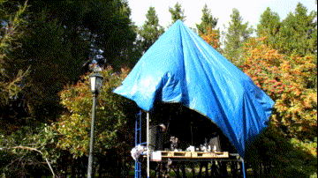

Полевая радиоточка
Field radiostation
Здесь мы сканируем электромагнитный эфир - а в нём много интересного, например более или менее важные разговоры, отзвуки молний и трансформаторов, сигналы которые подают друг другу телефоны, роутеры, базовые станции и ключи от машины. На радиоэфире отражаются солнечная активность, состояние ионосферы и множество других вещей - это практически невидимый универсальный язык. На этой станции мы исследуем коммуникационный ландшафт и складываем сигналы в шумовой коллаж.
Here we scan the electromagnetic ether - and there are many interesting things in it, such as more or less important conversations, the echoes of lightning and transformers, the signals that phones, routers, base stations and car keys give each other. The radio air reflects solar activity, the state of the ionosphere, and a host of other things - it's like an invisible universal language. At this station, we explore the communications landscape and put the signals into a noisy collage.
Выживание в культуре и в окружающем мире происходит через нахождение способа присутсвия в данном месте, локации, конкретной ситуации и расстановке сил. В ситуации прогрессирующего сокращения ресурсов часто это присутствие в более или менее жёстких (или свободных) полевых условиях. Для устойчивого присутствия важно умение воспринимать ситуацию, слушать окружающий мир и реагировать на поступающие сигналы, выстраивать и давать обратную связь. Производство через восприятие окружающей среды позволяет выстроить открытую к неожиданным сценариям свободную исследовательсткую стратегию, в силу своей простоты достаточно устойчивую к нескончаемым кризисам.
Survival in culture and in the world around us comes through finding a way to be present in a given place, location, situation, and balance of power. In a situation of progressively diminishing resources, it is often presence in more or less rigid (or free) field conditions. The ability to perceive the situation, listen to the world around you, respond to incoming signals, build and give feedback is important for sustained presence. Production through environmental perception allows for open to unexpected scenarios and free exploratory strategy, which is sufficiently resistant to endless crises by virtue of its simplicity.
as part of "I live and work and rest" project curated by _beznazvaniia at 48 hours novosibirsk, 2021